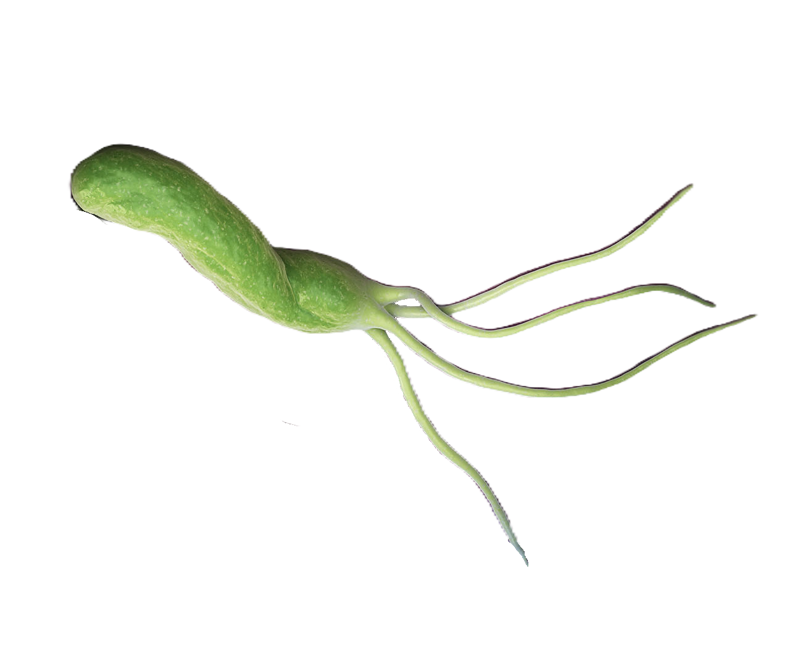
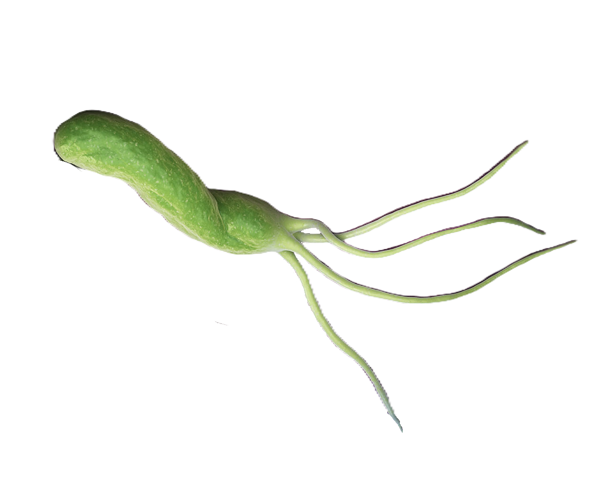

Descripción microbiológica
Helicobacter pylori es un bacilo gramnegativo curvado o espiralado de 2.5-5 µm de longitud y 0.5-1 µm de diámetro, con 4-6 flagelos polares lofótricos que le confieren alta movilidad. Presenta una membrana externa rica en lipopolisacárido (LPS) con baja actividad endotóxica y proteínas de adhesión (BabA, SabA). Microaerófilo estricto (requiere 5-15% O2), oxidasa y catalasa-positivo, y productor de ureasa (clave para su patogenicidad). Las colonias son translúcidas y no hemolíticas en agar sangre tras 3-5 días de incubación a 37°C en atmósfera húmeda con 10% CO2.
Características distintivas
- Tinción: Gram-negativo espiralado (formas cocoides en cultivos viejos).
- Metabolismo: Hidroliza urea rápidamente (prueba rápida de ureasa positiva en 15 min).
- Resistencias: Alta resistencia natural a vancomicina y trimetoprim.
- Factores de virulencia: Isla de patogenicidad cag (CagA), VacA, ureasa.
Ecología y transmisión
Coloniza exclusivamente el epitelio gástrico humano (bajo la capa de moco, cerca de las células parietales). Se transmite por vía fecal-oral o oral-oral (agua contaminada, regurgitación, endoscopios mal esterilizados). Prevalencia >50% en países en desarrollo, asociada a hacinamiento y falta de saneamiento. Factores de riesgo incluyen gastritis crónica, uso prolongado de AINEs y predisposición genética (grupo sanguíneo O).
Factores ambientales
- Supervivencia: Sensible a pH <4.0, pero neutraliza ácido gástrico mediante ureasa.
- pH óptimo: 6.0-7.0, pero tolera pH 2.0-8.0 gracias a ureasa.
- Biocidas: Sensible a glutaraldehído al 2%, peróxido de hidrógeno al 6%.
Mecanismos de patogenicidad
Estrategias para evadir defensas gástricas:
| Factor | Mecanismo | Efecto clínico |
|---|---|---|
| Ureasa | Degrada urea → NH3 + CO2 (neutraliza ácido) | Supervivencia en pH gástrico |
| CagA (cag PAI) | Se inyecta a células epiteliales vía T4SS | Alteración de citoesqueleto, inflamación |
| VacA | Forma poros en membranas | Apoptosis de células epiteliales |
Enfermedades clínicas
- Gastritis crónica: 100% de infectados (asintomáticos en 70% de casos).
- Úlcera péptica: 10-20% de infectados (90% úlceras duodenales, 70% gástricas).
- Cáncer gástrico: 1-3% de infectados (adenocarcinoma tipo intestinal, linfoma MALT).
- Otras: Anemia ferropénica (gastritis atrófica), púrpura trombocitopénica.
Diagnóstico y tratamiento
Métodos diagnósticos:
- Invasivos: Biopsia gástrica con prueba rápida de ureasa, histología (tinción de Giemsa), cultivo (agar Skirrow).
- No invasivos: Test del aliento con urea-13C, antígeno fecal, serología (IgG).
Terapia de erradicación (protocolos de 10-14 días):
- Primera línea: IBP + claritromicina + amoxicilina (TASA >85% si resistencia a claritromicina <15%).
- Resistencia: Terapia cuádruple con bismuto (PPI + bismuto + tetraciclina + metronidazol).
- Emergente: Rifabutina + levofloxacino en fallos múltiples.
Prevención y control
- Higiene: Agua potable, lavado de manos, desinfección de endoscopios.
- Detección: Testar y tratar en úlcera péptica, cáncer gástrico familiar.
- Vacunas: En investigación (antígenos recombinantes UreB + VacA).
- Antibiograma: Recomendado en áreas con alta resistencia a claritromicina (>20%).
Datos epidemiológicos
- Infecta a ~4.4 billones de personas mundialmente (60% prevalencia global).
- Responsable del 89% de cánceres gástricos no cardiales (según IARC).
- Tasa de reinfección: <1%/año en países desarrollados, 10-20% en áreas endémicas.